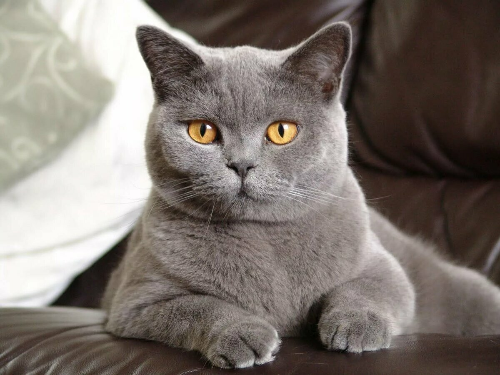

Британская короткошерстная кошка
Есть 2 породы – британская короткошерстная и шотландская вислоухая (скоттиш фолд). Отдельно выделена разновидность последней – шотландская прямоухая (скоттиш страйт), которую еще называют остроухая. Все эти породы близки, и когда-то их вязали друг с другом. Но в 2004 г. WCF введен запрет на вязку кошек шотландцев и британцев. Повадки и характер – это факторы, которые делают британских кошек популярными.
Британская короткошерстная кошка станет прекрасным компаньоном для людей разного возраста и семей с детьми благодаря спокойному жизнерадостному характеру и философскому отношению к ежедневным отлучкам хозяев.

lapkins.ru/Чат
- Добрый день!
- Привет
- Тук тук